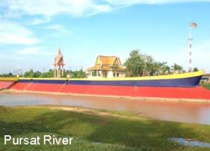

- Siem Reap
- Pailin
- Battambang
- Pursat
- Banteay Meanchey
- Oddar Meanchey
- Preah Vihear
- Kampong Thom
- Kampong Chhnang
- Kampong Cham
- Stung Treng
- Ratanakiri
- Mondulkiri
- Kratie
- Tbongkhmum
- Preyveng
- Svay Rieng
- Kandal
- Phnom Penh
- Takeo
- Kampong Speu
- Kampot
- Kep
- Preah Sihanouk
- koh kong


Pursat Travel Guides
General Information
Pursat is the fourth biggest province of Cambodia. The province is located in the western part of the country and borders clockwise from the north with Battambang, the Tonle Sap Lake, Kompong Chhnang, Kompong Speu, Koh Kong, and Thailand. Pursat offers a perfect access to both the Tonle Sap (just 35km far) and the Cardamom Mountains (right to the West). The name of Pursat refers to a type of tree.
For the time being, Pursat receives few travellers and the two main attractions, the Cardamoms and the Tonle Sap require a little initiative on the tourist's part to visit. Pursat is predominantly accessible by the National Highway No 5 form Phnom Penh (174km) and Battambang (106km). There is also an old slowly train working between Phnom Penh and Battambang, which stops outside (2km) from Pursat.
The provincial capital of Pursat is also called Pursat town. The city is located right in the middle between the Tonle Sap and the Cardamom Mountains on the riverbanks of the Stung Pursat. There isn?t that much to do in that small town, so most of the tourists coming here are more or less on their way to Battambang or Phnom Penh. For people just driving by, the impression of a boring ordinary town remains. The only tourist attraction in town is the marble workshops near the bridge on the main street. The precious marble stones originate from the Cardamoms, than they are brought here, followed up and sold near the Lam Siv Eng Restaurant. About 5 km from town is the tomb of Khleang Meung.
The Tonle Sap
Pursat province offers the magnificent opportunity to see one of the larger and markedly less touristy floating villages without a significant investment in time or money. In fact, there are a number of floating villages in the province only accessible from the lake, Peach Kantil, Kbal Taol, and Prek Kr, but you can only see Kompong Luong for the cost of the day-rate for a moto ($6-8) and the cost for a boat ride once you get there.
Central Cardamoms
Cardamom Mountains. Accessing the central Cardamoms from Pursat is not too difficult as there is a road from Pursat to Veal Veng, a small village between the Mt. Samkos and Mt. Aural Wildlife Sanctuaries. There's really nothing to do but to take a drive through the country, to have a look at the mountains, and to talk to people who don't see many foreigners ? and that is even worth it. There's no organized transport from Pursat to this place, but if you ask around you should eventually get satisfactory results.
Geography
Pursat province is 12,692 square kilometres big. It's located in the Southwest of the country and is bordering to the North with Battambang, to the East with Kampong Chhnang, to the South with Kampong Speu and Koh Kong and to the West with Thailand. The province consists of some typical plain wet areas near the Tonle Sap Basin, covering rice fields and other agricultural plantations. The Tonle Sap itself covers a big part in the province's Northeast. Most surface area of the country is the Kr?vanh Mountains, or literally called "Cardamom Mountains". This is a green, forested mountain range in the southwestern part of the province, near to the border with Thailand. The highest elevation is the 1,813m high Phnom Aural in the Southeast corner of the country.
Population
The current population in this province is about 442,973 people or 3.1% of the country's total population (14,363,519 person in Cambodia, 2007, provincial government data), with 214,651 male and 228,342 female. The population density is th erefore 35 people per square kilometre
Climate
The country has a tropical climate - warm and humid. In the monsoon season, abundant rain allows for the cultivation of a wide variety of crops. This year-round tropical climate makes Cambodia ideal for developing tourism. Travellers need not to fear natural disasters such as erupting volcanoes or earthquakes, and the country is not directly affected by tropical storms.
Climate: Cambodia can be visited throughout the year. However, those plans to travel extensively by road should be avoided the last two months of the rainy season when some countryside roads may be impassable. The average temperature is about 27 degrees Celsius; the minimum temperature is about 16 degrees. December and January are the coolest months, whereas the hottest is April.
General information about the provincial climate:
- Cool season: November- March (18-28c)
- Hot season: March- May (22c -34c)
- Rainy season: May - October (22-32c, with humidity up to 90%.)
Pursat's average temperature throughout the year is definitely lower than in other areas of Cambodia (except Ratanakiri and Mondulkiri Province).
Economy
Pursat's economy consists basically of agricultural farming, fishery, rice and fruit cropping in the North of the province near the Tonle Sap Basin. Beside this the harvesting of sandalwood oil, which fetches huge prices in Asia (but sandalwood trees are disappearing fast in Cambodia) is another livelihood for the locals. Unfortunately the illegal logging of precious hardwoods and the poaching of endangered species give some people an additional income.